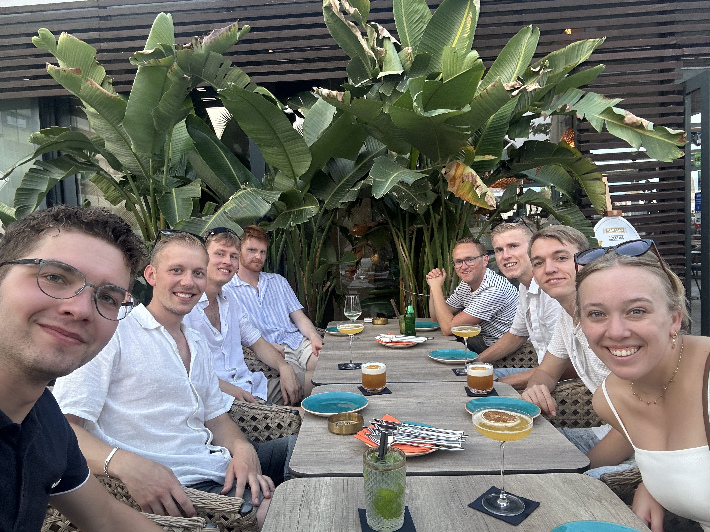
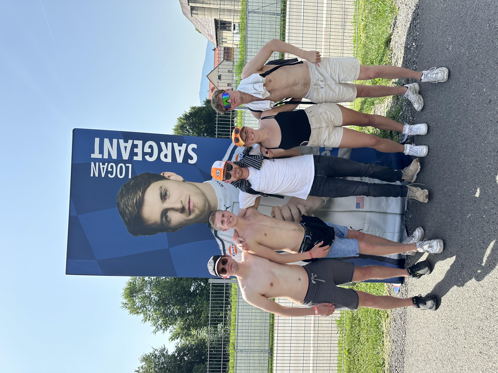
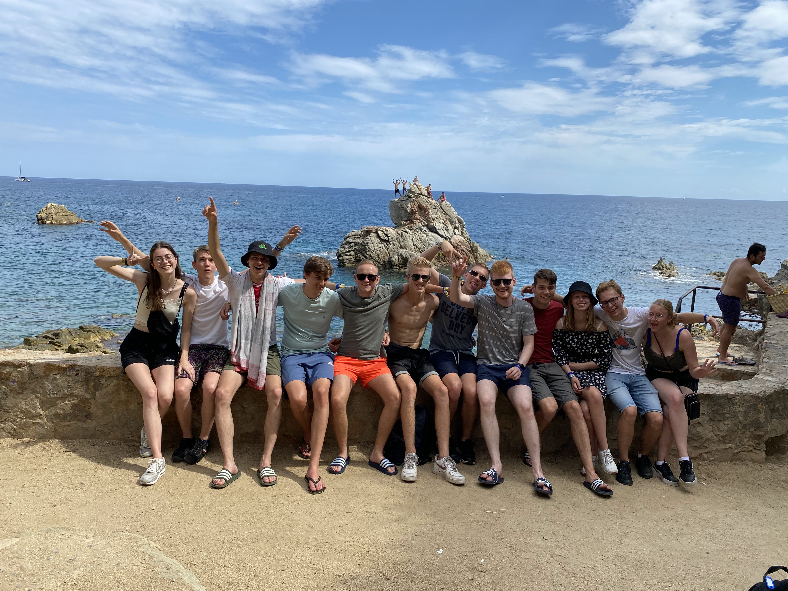

Welkom op onze website
Welkom op de website van al onze momenten samen
Veel plezier met het bladeren door onze foto's!
Onze momenten

Split
23 augustus 2024
Vakantie in Split.

GP Oostenrijk
27 juni 2024
De Grand Prix van Oostenrijk.

Lloret de Mar
19 augustus 2022
Vakantie in Lloret de Mar.
Over onze vriendengroep
Onze vriendengroep bestaat al vele jaren. Door de jaren heen hebben we veel meegemaakt samen. Van feestjes en vakanties tot Niels die naar het ziekenhuis gaat. Deze website is een manier om al die speciale momenten vast te leggen.
Onze herinneringen zullen over de jaren heen hier toegevoegd worden